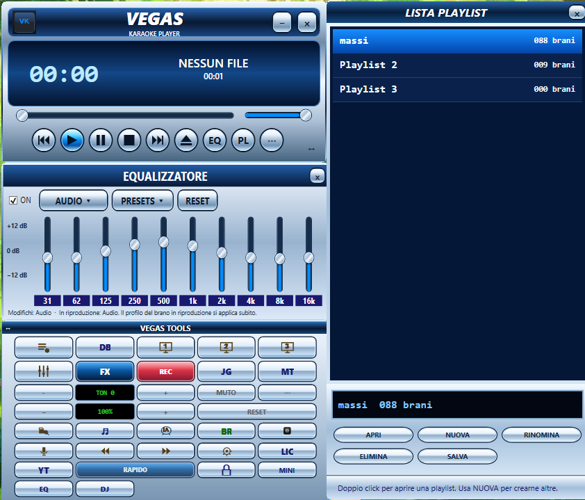
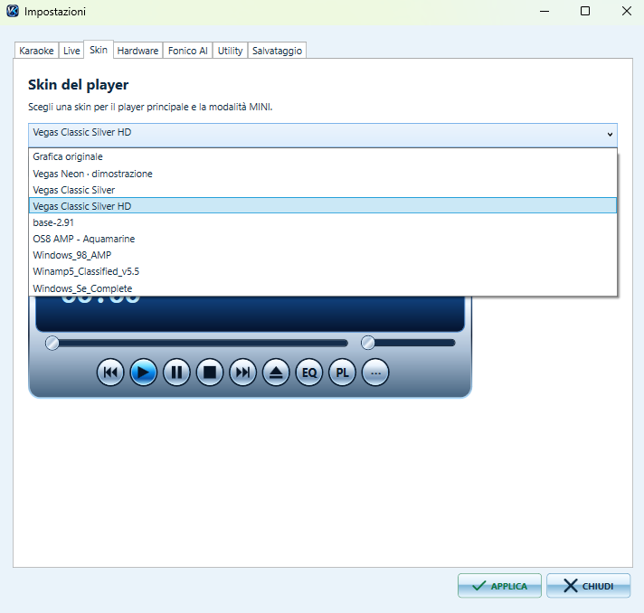
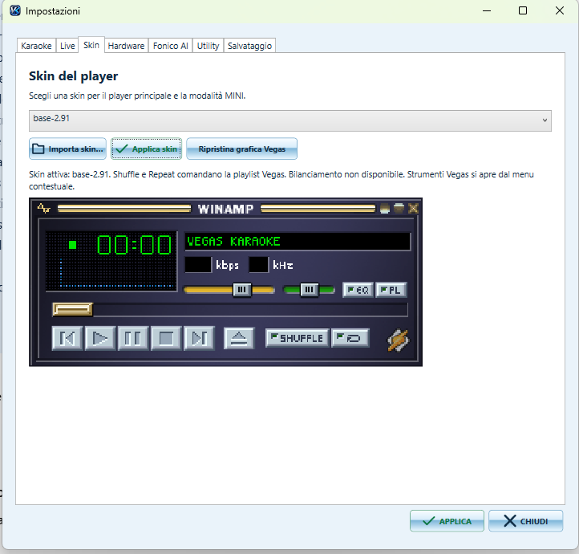
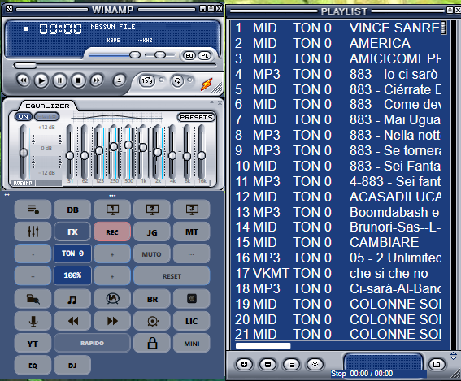
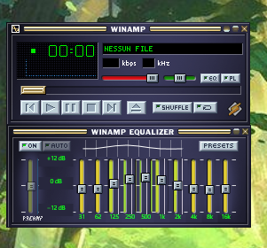

Skin Vegas Classic Silver e Silver HD
Due skin incluse nel setup, anche nelle nuove installazioni. Silver HD coordina Player, Equalizzatore, Playlist, Vegas Tools, Mixer, Explorer File, Archivio basi e Multitraccia.
Skin Classic Silver e Silver HD, importazione Winamp Classic, finestre magnetiche, playlist migliorate, nuovi controlli e convertitore karaoke ampliato.
Scopri le novità della versione 3.0 attraverso schermate reali del programma. Le funzionalità disponibili dipendono dalla licenza FREE, HOME o PRO.

Un'interfaccia coordinata per i principali strumenti del programma. Inclusa nel setup insieme a Classic Silver.
Scopri tutte le novità 3.0


Due skin incluse nel setup, anche nelle nuove installazioni. Silver HD coordina Player, Equalizzatore, Playlist, Vegas Tools, Mixer, Explorer File, Archivio basi e Multitraccia.
Da Impostazioni → Skin puoi importare skin Classic .wsz. Player, Playlist ed Equalizzatore utilizzano le risorse grafiche disponibili nella skin; puoi sempre ripristinare la grafica Vegas.
Affianca le finestre compatibili, spostale insieme e sganciale con Shift + trascinamento. Vegas ricorda posizione e dimensioni.
Riordina i comandi e organizza i pulsanti in base alle tue esigenze.
Numero, formato e tonalità allineati. Nella Playlist Classic lo scorrimento orizzontale permette di leggere titoli lunghi.
Riproduzione casuale e ripetizione del brano corrente oppure dell’intera playlist.
Sette preset: Flat, Pop, Rock, Classical, Dance, Live e Soft. Salva preset personali e visualizza bitrate e frequenza di campionamento, quando disponibili.
Crea video MP4 da MP3 e MIDI/KAR con testi sincronizzati visibili anche in altri lettori video. Nella conversione KFN/KNF in MP3 il testo sincronizzato viene conservato quando disponibile.

Le skin Winamp .wsz possono presentare differenze a seconda delle risorse grafiche incluse nel file importato. Vegas Karaoke Player è un prodotto indipendente.
Confronta FREE, HOME e PRO